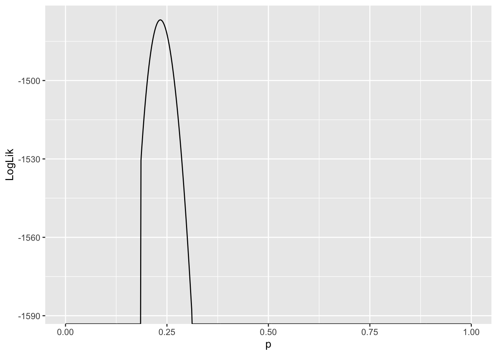
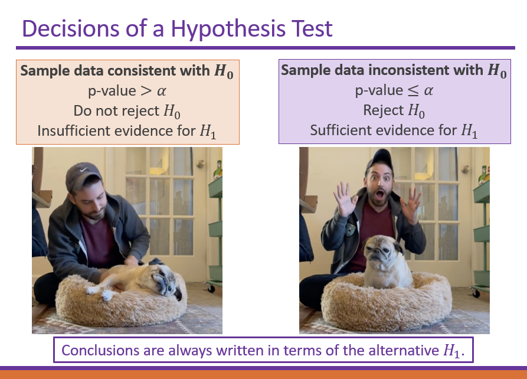
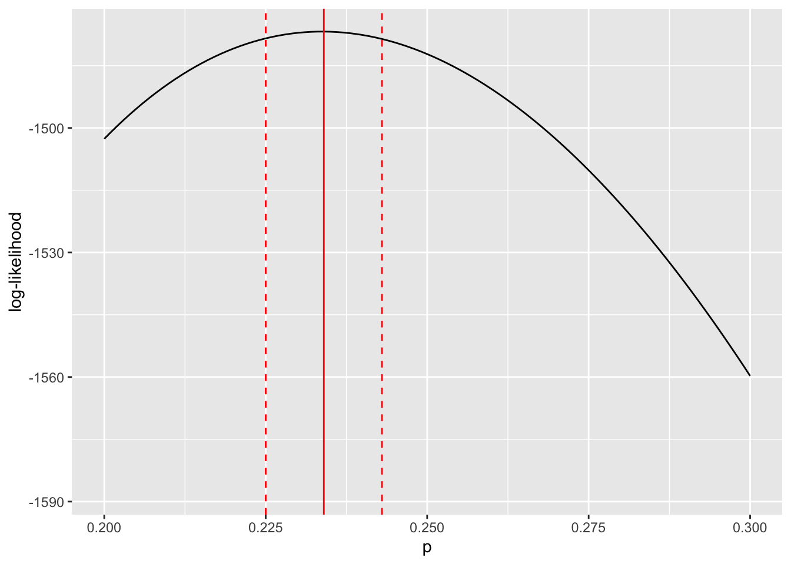

library(tidyverse)9 Introduction to inference II
9.1 Lesson preamble
9.1.1 Lesson objectives
- Learn how to estimate parameters by numerically maximizing the (log-)likelihood function.
- Implement numerical maximization using dataset of Farrell and Davies (2019).
- Review of confidence intervals and hypothesis testing, focusing on their relationship with each other and the likelihood function.
- Learn how to preform interval estimation using the log-likelihood.
- Practice constructing confidence intervals using dataset of Farrell and Davies.
9.1.2 Lesson outline
- Point estimation
- Review of the idea of maximum likelihood estimation
- Example of likelihood maximizion using Farrell and Davies dataset
- Hypothesis testing and interval estimation
- Review of hypothesis testing
- Hypothesis testing & confidence interval construction using the log-likelihood ratio test statistic
9.2 Review of the likelihood function
Given data \(x_1,x_2,\dots,x_n \sim f(x|\theta)\), likelihood-based statistical methods allow us to estimate parameters of of the model, \(\theta\), which we use to explain the data. (If the data are, say, present-day genome sequences, parameters of the model could include historical mutation and recombination rates and effective population sizes. If the data were occurrence-absence data for a species in a given location, parameters of the model could include immigration and emigration rates.)
To determine what parameters were mostly likely to have given rise to the data under the assumption \(f\) models the data generating process, we find what value of \(\theta\) maximizes
\[ \ln L(x_1,\dots,x_n|\theta) = \sum_{i=1}^n \ln f(x_i|\theta).\]
Remember that the logarithm shows up because \(\ln L\) has nice statistical properties, and there may be numerical issues if probabilities (or probability densities) are multiplied.
The intuition for the method is quite simple: the value of a parameter (or, in the multi-parameter setting, the combination of values for the parameters) which gives rise to the highest probability of observing our data was most likely to have given rise to that data.
9.3 Numerical maximization of the (log-)likelihood
Numerical methods are often used to evaluate and maximize the likelihood. When you use functions in many packages, they use numerical techniques to maximize the likelihood function or something like it. So that you know WHAT they are actually doing, the following code chunk illustrates how to evaluate the likelihood function and identify where it assumes a maximum value — using the Farrell and Davies data-set which you analyzed in the self-directed lecture a couple weeks ago.
read_csv("data/disease_distance.csv") -> disease_distanceRows: 4157 Columns: 24
── Column specification ────────────────────────────────────────────────────────
Delimiter: ","
chr (7): Country, Disease, Parasite, Host, HostOrder, ParaType, ParaFamily
dbl (17): Year, Cases, Deaths, Destroyed, Slaughtered, SR, EvoIso, Taxonomic...
ℹ Use `spec()` to retrieve the full column specification for this data.
ℹ Specify the column types or set `show_col_types = FALSE` to quiet this message.Note: we will not do anything fancy to maximize the likelihood. People have thought up clever ways to maximize functions, but we will do a brute-force search of parameter space to find the parameter(s) most likely to explain the data. This always works, but if there are a lot of combinations of parameters which need to be tested, this is intractable and more sophisticated methods are needed.
9.3.1 Step 1: specify the likelihood (i.e., the distribution of the data)
The likelihood one writes down will depend, in general, on the available data and the question that a researcher wants to answer. For this example, we will ignore very important complexities in the data (e.g., the fact that case and death count data are uneven between countries and years, the fact some hosts and parasites are represented more than others) to make progress.
Our goal will be to estimate, for the host species Sus scrofa (the wild boar) and parasite family Coronavirinae (which includes SARS-CoV-1 and -2), the probability that a case results in a death. We will group the data, regardless of the year, sampling location, etc.
What distribution makes sense to model the number of Sus scrofa deaths due to viruses in the family Coronavirinae? The Binomial! One can think of the number of (confirmed) cases of infection with a member of Coronavirinae as the “number of trials” and probability death as a “success probability”. Written out, \(\text{deaths}_{ij} \sim \text{Binomial}(\text{cases}_{ij}, p)\) for each country-year \(ij\).
data <- disease_distance |> subset(ParaFamily == "Coronavirinae" & Host == "Sus_scrofa")How many observations are there?
9.3.2 Step 2: evaluate the likelihood of individual observations
Since we will need to evaluate the probability of all observations in order to estimate \(p\), the first thing to figure out to evaluate likelihood when we have only one observation (i.e., the first row of the previous data frame). The below function evaluate the probability there are exactly \(d\) deaths when there are \(N\) cases and a probability \(p\) that a boar dies due to infection (somewhere, at some time) with a member of the Coronavirinae.
binomial_evaluator <- function(d, N, p){
return(dbinom(x = d, size = N, prob = p)) # log=T returns the log-likelihood of the observation
}
# let's figure out the likelihood of a single observation -- the first row
cases <- as.numeric(data[1,"Cases"])
deaths <- as.numeric(data[1,"Deaths"])
# make sure that your observations are numeric vectors, not data frames!
binomial_evaluator(d = deaths, N = cases, p = 0.01)[1] 0.9227447binomial_evaluator(d = deaths, N = cases, p = 0.1)[1] 0.4304672binomial_evaluator(d = deaths, N = cases, p = 0.2)[1] 0.1677722Of these values of \(p\), which is most likely to explain the observation in the first row?
9.3.3 Step 3: evaluate the likelihood of all observations
dataALL <- data[,c("Cases", "Deaths")]
binomial_evaluator(d = dataALL$Deaths, N = dataALL$Cases, p = 0.01) [1] 9.227447e-01 0.000000e+00 9.043821e-01 0.000000e+00 9.043821e-01
[6] 1.000000e-12 2.084925e-01 9.509900e-01 9.900000e-01 6.670506e-21
[11] 0.000000e+00 9.509900e-01 8.179069e-01 9.065279e-55binomial_evaluator(d = dataALL$Deaths, N = dataALL$Cases,p = 0.1) [1] 4.304672e-01 1.693764e-02 3.486784e-01 0.000000e+00 3.486784e-01
[6] 1.000000e-06 7.274974e-08 5.904900e-01 9.000000e-01 1.596866e-07
[11] 0.000000e+00 5.904900e-01 1.215767e-01 1.551125e-13binomial_evaluator(d = dataALL$Deaths, N = dataALL$Cases,p = 0.2) [1] 1.677722e-01 1.516705e-96 1.073742e-01 3.860350e-306 1.073742e-01
[6] 6.400000e-05 7.621456e-16 3.276800e-01 8.000000e-01 4.470958e-04
[11] 8.870964e-220 3.276800e-01 1.152922e-02 1.208139e-049.3.4 Step 4: put the (log-)likelihoods together!
# numerical problems can arise when you take products of small numbers
# this is one reason why we need to take the log of the likelihood
# product of individual likelihoods (for each observation) = the sum of log-likelihoods
prod(binomial_evaluator(d = dataALL$Deaths, N = dataALL$Cases, p = 0.2))[1] 0sum(log(binomial_evaluator(d = dataALL$Deaths, N = dataALL$Cases, p = 0.2)))[1] -1502.6249.3.5 Step 5: identify the value of the parameter(s) most likely to explain the data
So far, we have only evaluated the log-likelihood (of one and all of observations) at specific values of the parameter of interest, \(p\). To identify what value of \(p\) is most likely to explain the data, we need to evaluate the log-likelihood across a RANGE of \(p\) values and identify when the function is maximized.
We can do this in a couple ways, but here is how using a for loop:
LogLik <- NULL
index <- 1
p_values_to_test <- seq(0, 1, by = 0.001)
for (p in p_values_to_test){
LogLik[index] <- sum(log(binomial_evaluator(d = dataALL$Deaths, N = dataALL$Cases, p = p)))
index <- index + 1
}
LLs <- data.frame(LogLik, p = p_values_to_test)
LLs |> ggplot(aes(x = p, y = LogLik)) + geom_line()
Values of \(p\) where \(\ln L(p) - -\infty\) are very unlikely to explain the data. Since we are interested in the value of \(p\) which gives rise to the largest \(\ln L\), and these values are infinitely negative, they are not candidates for our estimator of \(p\). As a result, they are suppressed in the plot.
Another thing to notice is the curvature of the likelihood function around the value where it assumes a maximum. This tells us something about how confident we should be about our “best guess” for the parameter, or the maximum likelihood estimate of that parameter. More on this in a couple minutes…
LLs |> subset(LogLik == max(LogLik)) LogLik p
235 -1476.786 0.2349.3.6 Homework question…
In the next homework, you will be asked to write a function with arguments that specify the host species and the parasite family. Then, using this function on all host and parasite family combinations, you will be asked to estimate the most likely values of \(p\), i.e., the value which maximizes the likelihood function that arises from the assumption that, for a combination of host and parasite family, the number of deaths of the host is Binomial with a probability of death that does not depend on time or sampling location. If there are no observations for a specific host and parasite family combination, the function should return NA; else, the function should return the value of \(p\) which maximizes the likelihood function formed from the data specific to that host and parasite family. You may also run into issues where the log-likelihood is negative infinity at all \(p\); in this case, the function should return NA. This is a really challenging exercise, but we think it will be (hopefully) equally as rewarding!
Hint: this exercise will involve modifying the code that you have been provided in this lecture. In particular, you will have to wrap the code above in a function and loop over all combinations of hosts and parasite families.
9.4 Review of hypothesis testing
Often, the objective of a study is not to estimate a parameter but to decide which of two (or more) contradictory claims about the parameter is consistent with the data. This part of statistics is called hypothesis testing. Hypothesis testing is intimately connected to the construction and interpretation of confidence intervals which quantify estimation uncertainty.

9.4.1 Null and alternative hypotheses
A statistical hypothesis is an assertion about the values of one or more parameters, or the form of a probability distribution that is used to model the data.
Two contradictory hypotheses of the first kind are
\[H_0: \theta = \theta_0\] \[H_1: \theta \neq \theta_0\]
The first hypothesis is called the null hypothesis and may correspond to an expectation we have about the parameter (from, e.g., prior data). The second hypothesis is called the alternative hypothesis. The data are used to make a principle conclusion about if the null hypothesis is consistent with the data; if so, we reject the alternative hypothesis and, if not, we reject the null hypothesis as an explanation for the data generative process. In the following sections, we will describe the process for conducting such a hypothesis test.
9.4.2 Test statistics
Suppose we have data \(x_1,\dots,x_n \sim f(x|\theta)\) and wish to test the above hypotheses, i.e., to decide if \(\theta \neq \theta_0\). We do this by constructing a test statistic, i.e., function of the data, and assessing if the realized value of statistic is consistent with its distribution under the null hypothesis. Is the value of the statistic, at some level of significance, different from what we would expect if the null hypothesis were true?
Many choices of test statistic are possible, but the likelihood ratio is one that is commonly used:
\[\lambda_{LR} = -2 (\ln L(\theta_0)-\ln L(\hat{\theta}_{\text{MLE}})).\]
The statistic is based on the likelihood function, and its asymptotic distribution (as the sample size becomes large) under the null hypothesis is known. \(\lambda_{LR}\) has an approximate \(\chi^2\) distribution under \(H_0\). (Recall that one must know the approximate distribution of a test statistic to preform a hypothesis test.) Given the value and distribution of our test statistic under the null hypothesis, we can determine which two competing hypothesis is consistent with the data.
9.4.3 How do we do this?
To decide between the null and alternative hypothesis, given a test statistic and its distribution under \(H_0\), we must specify a significance level \(\alpha\). The significance level measures how likely we are to reject the null hypothesis, given that it is true: \(\alpha = P(\text{reject } H_0 | H_0)\). The significance level is chosen before data collection, and is typically set to 0.05 or smaller. By a similar token, the power of a statistical test is defined as the probability of rejecting the alternative hypothesis, given it is true: \(1-\beta = \Pr(\text{reject } H_0 | H_1).\) Many factors affect the power of a test, but a test based on the likelihood ratio test statistic is the uniformly most powerful among all alternatives to test the above hypothesis. In general, one can preform (and it is best practice to preform!) analyses ahead of data collection to ensure power at a certain level.1
We conduct a hypothesis test at significance level \(\alpha\) as follows:
- State the null and alternative hypothesis and significance level \(\alpha\).
- Collect data, possibly with knowledge of the sample size required to achieve a certain power.
- Calculate the realized value \(s\) of a test statistic \(S\), e.g., \(\lambda_{LR}\). The test statistic must have a known distribution under the null hypothesis. The likelihood ratio has a \(\chi^2\) distribution under \(H_0\) above.
- Compute the probability of observing the realized value of the test statistic or something more extreme, given the null hypothesis is true, i.e., \(p = \Pr(S > s | H_0)\). This probability is called a \(p\) value. If \(p < \alpha\), we reject the null hypothesis at significance level \(\alpha\) and, if not, we fail to reject \(H_0\).
To illustrate how this works, we will return to the previous example.
9.5 Hypothesis testing using the (log-)likelihood ratio
Using data of the number of cases and deaths of the wild boar infected with members of the viral family Coronavirinae, we estimated that the probability of death given infection is \(\hat{p}_{\text{MLE}} = 0.234\). Is this estimate significantly different than say 0.2?
A test of \(H_0: p = 0.2\) vs \(H_1: p \neq 0.2\) at significance level \(\alpha = 0.05\) can be preformed by
- calculating the log-likelihood ratio test statistic
- determining the probability of obtaining a statistic more extreme, under the expected distribution for the statistic. For the log-likelihood statistic, as it has a \(\chi^2\) distribution with one degree of freedom, this can be done as follows:
LL_at_null <- LLs |> subset(p == 0.2) |> select(LogLik)
LL_at_max <- LLs |> subset(LogLik == max(LogLik)) |> select(LogLik)
test_statistic <- as.numeric(-2*(LL_at_null - LL_at_max))
test_statistic ### realized value of the likelihood ratio test statistic[1] 51.67639pchisq(test_statistic, df = 1, lower.tail = FALSE)[1] 6.544503e-13### if p < 0.05, then we reject H0; otherwise, we fail to reject H09.5.1 Challenge
How might we extend this operation – of calculating the \(p\)-value, or the probability of a the log-likelihood ratio test statistic more extreme than the one we observed – to determine the set of \(p_0\) such that we fail to reject \(H_0: p = p_0\)?
9.6 Confidence intervals
Having gotten an estimate for \(p\), the probability a wild boar dies when infected with a member of the Coronavirinae, you might be asking if it is possible to get an estimate of the uncertainty around our “best guess” (i.e., maximum likelihood estimator) for \(p\). The answer is a resounding YES! It turns out the previous calculations enable us to construct a confidence interval for \(p\). This is because the confidence interval for a parameter is nothing but the set of values of the parameter for which we cannot reject the null hypothesis!2 That is, there is a duality between confidence intervals and hypothesis testing. When you do one, you (secretly) do the other. In the previous example, we showed that \(p=0.2\) is not in the confidence interval for \(p\)!
There are other ways to construct confidence intervals, but the one below involves finding which \(\theta_0\) are such that \(\lambda_{LR} -2(\ln L(\theta_0)-\ln L(\hat{\theta}_{\text{MLE}})) < \chi^2_c\), where \(\chi^2_c\) a cutoff based on \(100(1-\alpha)\%\)-ile for a \(\chi^2\) distribution with one degree of freedom.3
cutoff <- qchisq(0.95,df=1)/2
# cutoff for admissible values based on 95%-ile for a chi-squared dist df=1
MLE <- LLs |> subset(LogLik == max(LogLik))
LLs %>% subset(abs(LogLik - MLE$LogLik) < cutoff) -> values_inconfidence_interval
c(min(values_inconfidence_interval$p),
max(values_inconfidence_interval$p)) ### confidence interval![1] 0.225 0.243Now, let’s display our point estimate for \(p\) as well as the confidence interval we have just constructed.
LLs %>% ggplot(aes(x = p, y = LogLik)) + geom_line() +
geom_vline(xintercept = MLE$p, color = "red") +
geom_vline(xintercept = min(values_inconfidence_interval$p),
color = "red", linetype = "dashed") +
geom_vline(xintercept = max(values_inconfidence_interval$p),
color = "red", linetype = "dashed") +
labs(x = "p", y = "log-likelihood") +
xlim(c(0.2,0.3))
The limits for the \(95\%\) confidence interval for \(p\) are given by the dashed red lines. The maximum likelihood estimate for \(p\) is represented by the solid red line. The key thing to note is that the width confidence region is determined by the curvature of the log-likelihood function about the maximum likelihood estimate for the focal parameter.
We will learn how to do power analyses in the linear models lectures!↩︎
There are other ways to define and understand confidence intervals but they are somewhat oblique.↩︎
Note: the code in the previous section assumed \(\alpha = 0.05\). The functions we use in this section, to keep things general, are a bit different.↩︎